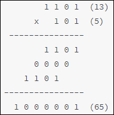

关键词：流水线，乘法器
硬件描述语言的一个突出优点就是指令执行的并行性。多条语句能够在相同时钟周期内并行处理多个信号数据。
但是当数据串行输入时，指令执行的并行性并不能体现出其优势。而且很多时候有些计算并不能在一个或两个时钟周期内执行完毕，如果每次输入的串行数据都需要等待上一次计算执行完毕后才能开启下一次的计算，那效率是相当低的。流水线就是解决多周期下串行数据计算效率低的问题。
流水线
流水线的基本思想是：把一个重复的过程分解为若干个子过程，每个子过程由专门的功能部件来实现。将多个处理过程在时间上错开，依次通过各功能段，这样每个子过程就可以与其他子过程并行进行。
假如一个洗衣店内洗衣服的过程分为 4 个阶段：取衣、洗衣、烘干、装柜。每个阶段都需要半小时来完成，则洗一次衣服需要 2 小时。
考虑最差情况，洗衣店内只有一台洗衣机、一台烘干机、一个衣柜。如果每半小时送来一批要洗的衣服，每次等待上一批衣服洗完需要 2 小时，那么洗完 4 批衣服需要的时间就是 8 小时。
图示如下：
对这个洗衣店的装备进行升级，一共引进 4 套洗衣服的装备，工作人员也增加到 4 个，每个人负责一个洗衣阶段。所以每批次的衣服，都能够及时的被相同的人放入到不同的洗衣机内。由于时间上是错开的，每批次的衣服都能被相同的人在不同的设备与时间段（半小时）内洗衣、烘干和装柜。图示如下。

可以看出，洗完 4 批衣服只需要 3 个半小时，效率明显提高。
其实，在 2 小时后第一套洗衣装备已经完成洗衣过程而处于空闲状态，如果此时还有第 5 批衣服的送入，那么第一套设备又可以开始工作。依次类推，只要衣服批次不停的输入，4 台洗衣设备即可不间断的完成对所有衣服的清洗过程。且除了第一批次洗衣时间需要 2 小时，后面每半小时都会有一批次衣服清洗完成。
衣服批次越多，节省的时间就越明显。假如有 N 批次衣服，需要的时间为 (4+N) 个半小时。
当然，升级后洗衣流程也有缺点。设备和工作人员的增加导致了投入的成本增加，洗衣店内剩余空间也被缩小，工作状态看起来比较繁忙。
和洗衣服过程类似，数据的处理路径也可以看作是一条生产线，路径上的每个数字处理单元都可以看作是一个阶段，会产生延时。
流水线设计就是将路径系统的分割成一个个数字处理单元（阶段），并在各个处理单元之间插入寄存器来暂存中间阶段的数据。被分割的单元能够按阶段并行的执行，相互间没有影响。所以最后流水线设计能够提高数据的吞吐率，即提高数据的处理速度。
流水线设计的缺点就是，各个处理阶段都需要增加寄存器保存中间计算状态，而且多条指令并行执行，势必会导致功耗增加。
下面，设计一个乘法器，并对是否采用流水线设计进行对比。
一般乘法器设计
前言
也许有人会问，直接用乘号 * 来完成 2 个数的相乘不是更快更简单吗？
如果你有这个疑问，说明你对硬件描述语言的认知还有所不足。就像之前所说，Verilog 描述的是硬件电路，直接用乘号完成相乘过程，编译器在编译的时候也会把这个乘法表达式映射成默认的乘法器，但其构造不得而知。
例如，在 FPGA 设计中，可以直接调用 IP 核来生成一个高性能的乘法器。在位宽较小的时候，一个周期内就可以输出结果，位宽较大时也可以流水输出。在能满足要求的前提下，可以谨慎的用 * 或直接调用 IP 来完成乘法运算。
但乘法器 IP 也有很多的缺陷，例如位宽的限制，未知的时序等。尤其使用乘号，会为数字设计的不确定性埋下很大的隐瞒。
很多时候，常数的乘法都会用移位相加的形式实现，例如：
实例
A = (A<<1) + A ; //对应A * 3
A = (A<<3) + (A<<2) + (A<<1) + A ; //对应A * 15
用一个移位寄存器和一个加法器就能完成乘以 3 的操作。但是乘以 15 时就需要 3 个移位寄存器和 3 个加法器（当然乘以 15 可以用移位相减的方式）。
有时候数字电路在一个周期内并不能够完成多个变量同时相加的操作。所以数字设计中，最保险的加法操作是同一时刻只对 2 个数据进行加法运算，最差设计是同一时刻对 4 个及以上的数据进行加法运算。
如果设计中有同时对 4 个数据进行加法运算的操作设计，那么此部分设计就会有危险，可能导致时序不满足。
此时，设计参数可配、时序可控的流水线式乘法器就显得有必要了。
设计原理
和十进制乘法类似，计算 13 与 5 的相乘过程如下所示：

由此可知，被乘数按照乘数对应 bit 位进行移位累加，便可完成相乘的过程。
假设每个周期只能完成一次累加，那么一次乘法计算时间最少的时钟数恰好是乘数的位宽。所以建议，将位宽窄的数当做乘数，此时计算周期短。
乘法器设计
考虑每次乘法运算只能输出一个结果（非流水线设计），设计代码如下。
实例
#(parameter N=4,
parameter M=4)
(
input clk,
input rstn,
input data_rdy , //数据输入使能
input [N-1:0] mult1, //被乘数
input [M-1:0] mult2, //乘数
output res_rdy , //数据输出使能
output [N+M-1:0] res //乘法结果
);
//calculate counter
reg [31:0] cnt ;
//乘法周期计数器
wire [31:0] cnt_temp = (cnt == M)? 'b0 : cnt + 1'b1 ;
always @(posedge clk or negedge rstn) begin
if (!rstn) begin
cnt <= 'b0 ;
end
else if (data_rdy) begin //数据使能时开始计数
cnt <= cnt_temp ;
end
else if (cnt != 0 ) begin //防止输入使能端持续时间过短
cnt <= cnt_temp ;
end
else begin
cnt <= 'b0 ;
end
end
//multiply
reg [M-1:0] mult2_shift ;
reg [M+N-1:0] mult1_shift ;
reg [M+N-1:0] mult1_acc ;
always @(posedge clk or negedge rstn) begin
if (!rstn) begin
mult2_shift <= 'b0 ;
mult1_shift <= 'b0 ;
mult1_acc <= 'b0 ;
end
else if (data_rdy && cnt=='b0) begin //初始化
mult1_shift <= {{(N){1'b0}}, mult1} << 1 ;
mult2_shift <= mult2 >> 1 ;
mult1_acc <= mult2[0] ? {{(N){1'b0}}, mult1} : 'b0 ;
end
else if (cnt != M) begin
mult1_shift <= mult1_shift << 1 ; //被乘数乘2
mult2_shift <= mult2_shift >> 1 ; //乘数右移，方便判断
//判断乘数对应为是否为1，为1则累加
mult1_acc <= mult2_shift[0] ? mult1_acc + mult1_shift : mult1_acc ;
end
else begin
mult2_shift <= 'b0 ;
mult1_shift <= 'b0 ;
mult1_acc <= 'b0 ;
end
end
//results
reg [M+N-1:0] res_r ;
reg res_rdy_r ;
always @(posedge clk or negedge rstn) begin
if (!rstn) begin
res_r <= 'b0 ;
res_rdy_r <= 'b0 ;
end
else if (cnt == M) begin
res_r <= mult1_acc ; //乘法周期结束时输出结果
res_rdy_r <= 1'b1 ;
end
else begin
res_r <= 'b0 ;
res_rdy_r <= 'b0 ;
end
end
assign res_rdy = res_rdy_r;
assign res = res_r;
endmodule
testbench
实例
module test ;
parameter N = 8 ;
parameter M = 4 ;
reg clk, rstn;
//clock
always begin
clk = 0 ; #5 ;
clk = 1 ; #5 ;
end
//reset
initial begin
rstn = 1'b0 ;
#8 ; rstn = 1'b1 ;
end
//no pipeline
reg data_rdy_low ;
reg [N-1:0] mult1_low ;
reg [M-1:0] mult2_low ;
wire [M+N-1:0] res_low ;
wire res_rdy_low ;
//使用任务周期激励
task mult_data_in ;
input [M+N-1:0] mult1_task, mult2_task ;
begin
wait(!test.u_mult_low.res_rdy) ; //not output state
@(negedge clk ) ;
data_rdy_low = 1'b1 ;
mult1_low = mult1_task ;
mult2_low = mult2_task ;
@(negedge clk ) ;
data_rdy_low = 1'b0 ;
wait(test.u_mult_low.res_rdy) ; //test the output state
end
endtask
//driver
initial begin
#55 ;
mult_data_in(25, 5 ) ;
mult_data_in(16, 10 ) ;
mult_data_in(10, 4 ) ;
mult_data_in(15, 7) ;
mult_data_in(215, 9) ;
end
mult_low #(.N(N), .M(M))
u_mult_low
(
.clk (clk),
.rstn (rstn),
.data_rdy (data_rdy_low),
.mult1 (mult1_low),
.mult2 (mult2_low),
.res_rdy (res_rdy_low),
.res (res_low));
//simulation finish
initial begin
forever begin
#100;
if ($time >= 10000) $finish ;
end
end
endmodule // test
仿真结果如下。
由图可知，输入的 2 个数据在延迟 4 个周期后，得到了正确的相乘结果。算上中间送入数据的延迟时间，计算 4 次乘法大约需要 20 个时钟周期。

流水线乘法器设计
下面对乘法执行过程的中间状态进行保存，以便流水工作，设计代码如下。
单次累加计算过程的代码文件如下（mult_cell.v ）：
实例
#(parameter N=4,
parameter M=4)
(
input clk,
input rstn,
input en,
input [M+N-1:0] mult1, //被乘数
input [M-1:0] mult2, //乘数
input [M+N-1:0] mult1_acci, //上次累加结果
output reg [M+N-1:0] mult1_o, //被乘数移位后保存值
output reg [M-1:0] mult2_shift, //乘数移位后保存值
output reg [N+M-1:0] mult1_acco, //当前累加结果
output reg rdy );
always @(posedge clk or negedge rstn) begin
if (!rstn) begin
rdy <= 'b0 ;
mult1_o <= 'b0 ;
mult1_acco <= 'b0 ;
mult2_shift <= 'b0 ;
end
else if (en) begin
rdy <= 1'b1 ;
mult2_shift <= mult2 >> 1 ;
mult1_o <= mult1 << 1 ;
if (mult2[0]) begin
//乘数对应位为1则累加
mult1_acco <= mult1_acci + mult1 ;
end
else begin
mult1_acco <= mult1_acci ; //乘数对应位为1则保持
end
end
else begin
rdy <= 'b0 ;
mult1_o <= 'b0 ;
mult1_acco <= 'b0 ;
mult2_shift <= 'b0 ;
end
end
endmodule
顶层例化
多次模块例化完成多次累加，代码文件如下（mult_man.v ）：
实例
#(parameter N=4,
parameter M=4)
(
input clk,
input rstn,
input data_rdy ,
input [N-1:0] mult1,
input [M-1:0] mult2,
output res_rdy ,
output [N+M-1:0] res );
wire [N+M-1:0] mult1_t [M-1:0] ;
wire [M-1:0] mult2_t [M-1:0] ;
wire [N+M-1:0] mult1_acc_t [M-1:0] ;
wire [M-1:0] rdy_t ;
//第一次例化相当于初始化，不能用 generate 语句
mult_cell #(.N(N), .M(M))
u_mult_step0
(
.clk (clk),
.rstn (rstn),
.en (data_rdy),
.mult1 ({{(M){1'b0}}, mult1}),
.mult2 (mult2),
.mult1_acci ({(N+M){1'b0}}),
//output
.mult1_acco (mult1_acc_t[0]),
.mult2_shift (mult2_t[0]),
.mult1_o (mult1_t[0]),
.rdy (rdy_t[0]) );
//多次模块例化，用 generate 语句
genvar i ;
generate
for(i=1; i<=M-1; i=i+1) begin: mult_stepx
mult_cell #(.N(N), .M(M))
u_mult_step
(
.clk (clk),
.rstn (rstn),
.en (rdy_t[i-1]),
.mult1 (mult1_t[i-1]),
.mult2 (mult2_t[i-1]),
//上一次累加结果作为下一次累加输入
.mult1_acci (mult1_acc_t[i-1]),
//output
.mult1_acco (mult1_acc_t[i]),
.mult1_o (mult1_t[i]), //被乘数移位状态传递
.mult2_shift (mult2_t[i]), //乘数移位状态传递
.rdy (rdy_t[i]) );
end
endgenerate
assign res_rdy = rdy_t[M-1];
assign res = mult1_acc_t[M-1];
endmodule
testbench
将下述仿真描述添加到非流水乘法器设计例子的 testbench 中，即可得到流水式乘法运算的仿真结果。
2 路数据为不间断串行输入，且带有自校验模块，可自动判断乘法运算结果的正确性。
实例
reg [N-1:0] mult1 ;
reg [M-1:0] mult2 ;
wire res_rdy ;
wire [N+M-1:0] res ;
//driver
initial begin
#55 ;
@(negedge clk ) ;
data_rdy = 1'b1 ;
mult1 = 25; mult2 = 5;
#10 ; mult1 = 16; mult2 = 10;
#10 ; mult1 = 10; mult2 = 4;
#10 ; mult1 = 15; mult2 = 7;
mult2 = 7; repeat(32) #10 mult1 = mult1 + 1 ;
mult2 = 1; repeat(32) #10 mult1 = mult1 + 1 ;
mult2 = 15; repeat(32) #10 mult1 = mult1 + 1 ;
mult2 = 3; repeat(32) #10 mult1 = mult1 + 1 ;
mult2 = 11; repeat(32) #10 mult1 = mult1 + 1 ;
mult2 = 4; repeat(32) #10 mult1 = mult1 + 1 ;
mult2 = 9; repeat(32) #10 mult1 = mult1 + 1 ;
end
//对输入数据进行移位，方便后续校验
reg [N-1:0] mult1_ref [M-1:0];
reg [M-1:0] mult2_ref [M-1:0];
always @(posedge clk) begin
mult1_ref[0] <= mult1 ;
mult2_ref[0] <= mult2 ;
end
genvar i ;
generate
for(i=1; i<=M-1; i=i+1) begin
always @(posedge clk) begin
mult1_ref[i] <= mult1_ref[i-1];
mult2_ref[i] <= mult2_ref[i-1];
end
end
endgenerate
//自校验
reg error_flag ;
always @(posedge clk) begin
# 1 ;
if (mult1_ref[M-1] * mult2_ref[M-1] != res && res_rdy) begin
error_flag <= 1'b1 ;
end
else begin
error_flag <= 1'b0 ;
end
end
//module instantiation
mult_man #(.N(N), .M(M))
u_mult
(
.clk (clk),
.rstn (rstn),
.data_rdy (data_rdy),
.mult1 (mult1),
.mult2 (mult2),
.res_rdy (res_rdy),
.res (res));
仿真结果
前几十个时钟周期的仿真结果如下。
由图可知，仿真结果判断信号 error_flag 一直为 0，表示乘法设计正确。
数据在时钟驱动下不断串行输入，乘法输出结果延迟了 4 个时钟周期后，也源源不断的在每个时钟下无延时输出，完成了流水线式的工作。
相对于一般不采用流水线的乘法器，乘法计算效率有了很大的改善。
但是，流水线式乘法器使用的寄存器资源也大约是之前不采用流水线式的 4 倍。
所以，一个数字设计，是否采用流水线设计，需要从资源和效率两方面进行权衡。

点我分享笔记